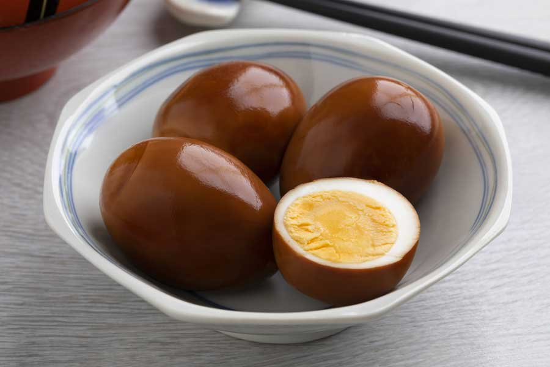

Soy-sauce Pickled Eggs

Description
Initially I discovered this recipe by reusing leftover korean pickled peppers marinade.
Using this marinade results in much more delicate taste compared to regular pickled eggs, the only downside is that you have to keep your pickled eggs in the fridge and consume within couple of weeks.
Ingredients
- 10 hard-boiled eggs
- 1 cup water
- 1/2 cup soy sauce
- 1/4 cup sugar
- 1/4 cup apple cider vinegar
- 1 dried or fresh chilli pepper (chopped)
- 1 anis star - optional
- 1L mason jar
Steps
- Boil your eggs using your preferred method.
- Place your hard-boiled eggs in the mason jar that's been washed with warm soapy water in advance.
- Prepare the marinade: mix water, soy sauce, sugar and spices in a pan, bring it to a boil, add vinegar.
- Pour the hot marinade over the eggs until the jar is full.
- Let the jar cool down at the room temp before transferring it to the fridge.
- Let eggs pickle for at least 3 days and enjoy!
Back to the main page